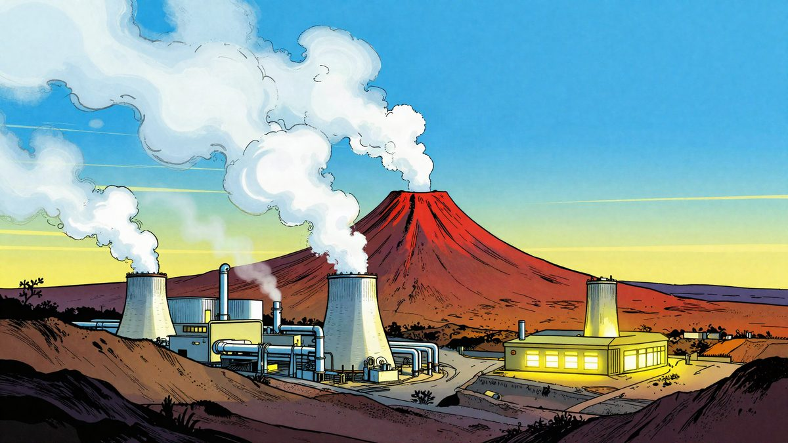
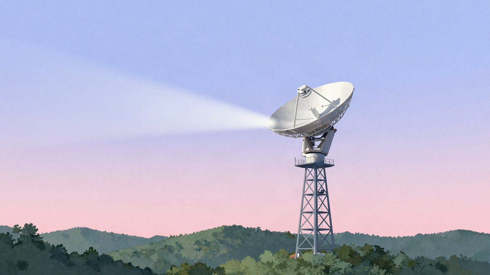

Google kupuje 50 MW struje iz Quaiseove geotermalne elektrane u Oregonu

Google je s tvrtkom Quaise Energy potpisao ugovor o otkupu 50 MW stalne struje iz geotermalne elektrane Project Obsidian u Oregonu. Ugovor se opisuje kao prvi takve vrste, a struja bi mogla stizati najranije od 2030. Quaise u drugoj fazi planira bušiti milimetarskim valovima, a cijena ugovora nije poznata.
Google i Quaise Energy potpisali su ugovor prema kojem Google otkupljuje 50 MW stalne struje iz elektrane Project Obsidian u Oregonu. Riječ je o geotermalnoj elektrani na superzagrijanim stijenama, a ugovor se opisuje kao prvi takve vrste na svijetu. Elektrana bi napajala Googleove postojeće data centre u mjestu The Dalles i okolnu mrežu, najranije od 2030.
Project Obsidian nalazi se na južnom boku vulkana Newberry. Zbog vulkanske topline blizu površine u prvoj će se fazi koristiti konvencionalno bušenje do superzagrijanih slojeva. U drugoj fazi Quaise planira prijeći na vlastite bušilice na milimetarske valove.
Zašto je bušenje problem
Geotermalna energija do sada je uglavnom ograničena na rijetke lokacije na kojima je toplina Zemljine unutrašnjosti dovoljno blizu površini. Konvencionalne bušilice počinju gubiti učinkovitost na temperaturama od oko 200 do 260 °C, što je obično na dubini od 3 do 5 km. Takva vrućina uništava svrdla, brtve i elektroniku u bušotini.
Quaise želi bušiti do 20 km duboko, gdje temperature mogu doseći 500 °C. Već na 374 °C voda prelazi u superkritično stanje, a Quaise tvrdi da je tada iznimno učinkovita i daje do deset puta više energije po bušotini. Ako to uspije, geotermalne bi se elektrane mogle graditi gotovo bilo gdje.
Gyrotron umjesto svrdla
Quaise koristi gyrotron, snažnu vakuumsku cijev razvijenu u Sovjetskom Savezu, koju su istraživači s MIT-a prilagodili za zagrijavanje plazme u fuzijskim reaktorima. Gyrotron proizvodi visokofrekventno milimetarsko zračenje koje zagrijava molekule u kristalnoj stijeni dok se ona ne otopi i ispari. Sustav s plinom zatim čisti bušotinu, pa svrdlo fizički ne dodiruje stijenu.
Pritisak na mreže
Data centri postoje desetljećima, ali razvoj interneta, clouda i umjetne inteligencije pretvorio ih je u golema postrojenja. Neki kampusi traže stotine megavata, a cijeli sektor troši desetke tisuća megavata stalne snage. To opterećuje električne mreže i otežava planove država koje su računale s ravnom potražnjom. Tehnološke tvrtke zato traže vlastite izvore struje, a neke su se obvezale graditi ili ponovno pokretati nuklearne elektrane. Google je ovim ugovorom odabrao drugi smjer.
CEO Quaisea Carlos Araque rekao je da ugovor s Googleom stvara komercijalnu osnovu za superzagrijanu geotermalnu energiju. Cijena ugovora nije poznata.
Izvor: New Atlas
Povezani članci
 Musk: Starlink V4 imat će oko 100 laserskih veza po satelitu, svaka preko 10 Tbit/s8. studenoga 2026.
Musk: Starlink V4 imat će oko 100 laserskih veza po satelitu, svaka preko 10 Tbit/s8. studenoga 2026.
AT&T i AST SpaceMobile: običan smartphone prešao s mobilne mreže na satelit bez prekida veze4. studenoga 2026.- Novi Xbox navodno će koštati do 1.800 dolara i stići 2028.20. listopada 2026.